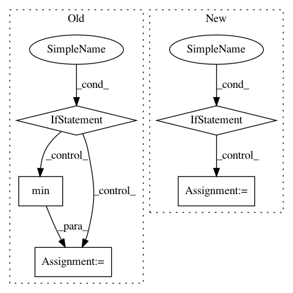

03b0e7061cf477fbeccb9c128ee76603df582d86,scripts/word_embeddings/evaluate_pretrained.py,,,#,159
Before Change
name = ""
if args_.max_vocab_size:
if args_.embedding_path and ".bin" in args_.embedding_path:
raise NotImplementedError(
"Not implemented for binary fastText model.")
size = min(len(token_embedding._idx_to_token), args_.max_vocab_size)
token_embedding._idx_to_token = token_embedding._idx_to_token[:size]
token_embedding._idx_to_vec = token_embedding._idx_to_vec[:size]
token_embedding._token_to_idx = {
token: idx
After Change
// Load pre-trained embeddings
if not args_.embedding_path:
if args_.embedding_name.lower() == "fasttext":
token_embedding_ = nlp.embedding.create(
args_.embedding_name,
source=args_.embedding_source,
load_ngrams=args_.fasttext_load_ngrams,
allow_extend=True,
unknown_autoextend=True)
else:
token_embedding_ = nlp.embedding.create(
args_.embedding_name, source=args_.embedding_source)
name = "-" + args_.embedding_name + "-" + args_.embedding_source
else:
token_embedding_ = load_embedding_from_path(args_)
name = ""
In pattern: SUPERPATTERN
Frequency: 3
Non-data size: 5
Instances
Project Name: dmlc/gluon-nlp
Commit Name: 03b0e7061cf477fbeccb9c128ee76603df582d86
Time: 2018-09-04
Author: leonard@lausen.nl
File Name: scripts/word_embeddings/evaluate_pretrained.py
Class Name:
Method Name:
Project Name: chainer/chainercv
Commit Name: 90b78b1379b3423aa3b4b5d0de7313f88bda23ab
Time: 2019-02-17
Author: yuyuniitani@gmail.com
File Name: chainercv/utils/mask/mask_to_bbox.py
Class Name:
Method Name: mask_to_bbox
Project Name: keras-team/keras
Commit Name: c913b6da92f6ab9a3f4c897caa4085e782a14680
Time: 2018-09-11
Author: rvinas@users.noreply.github.com
File Name: tests/keras/backend/reference_operations.py
Class Name:
Method Name: min